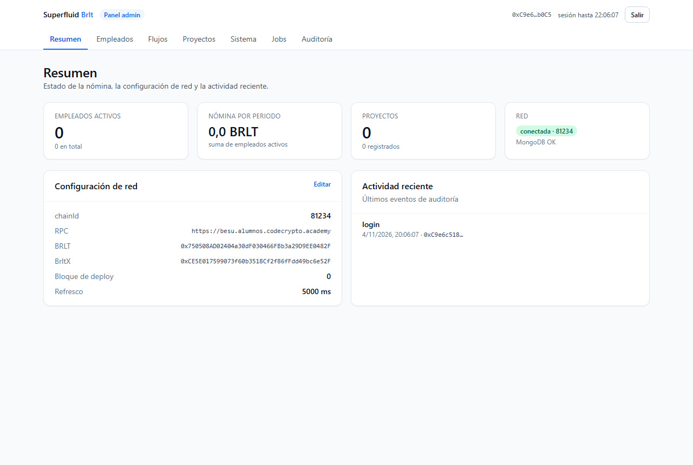
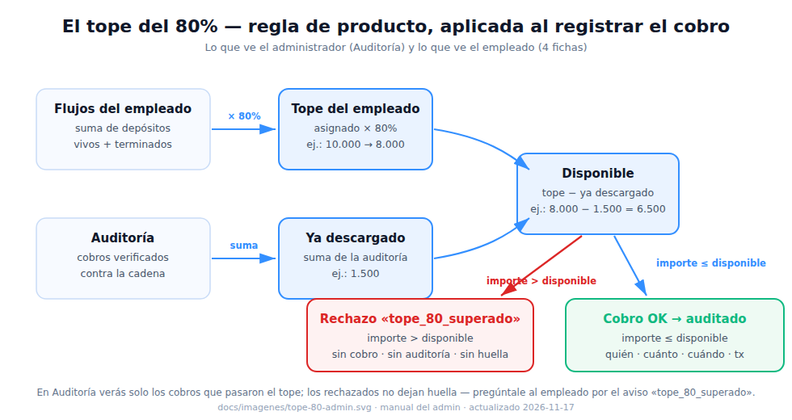
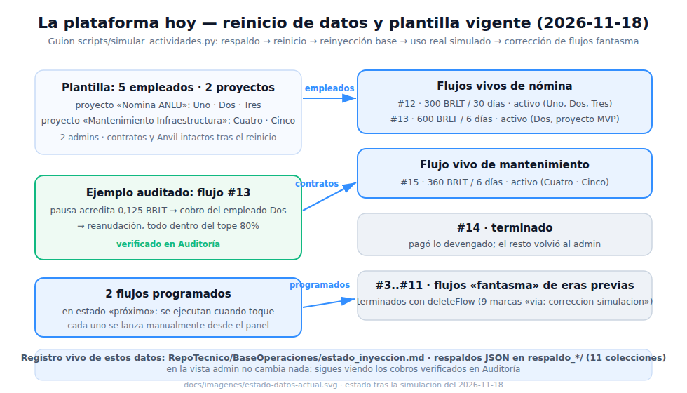
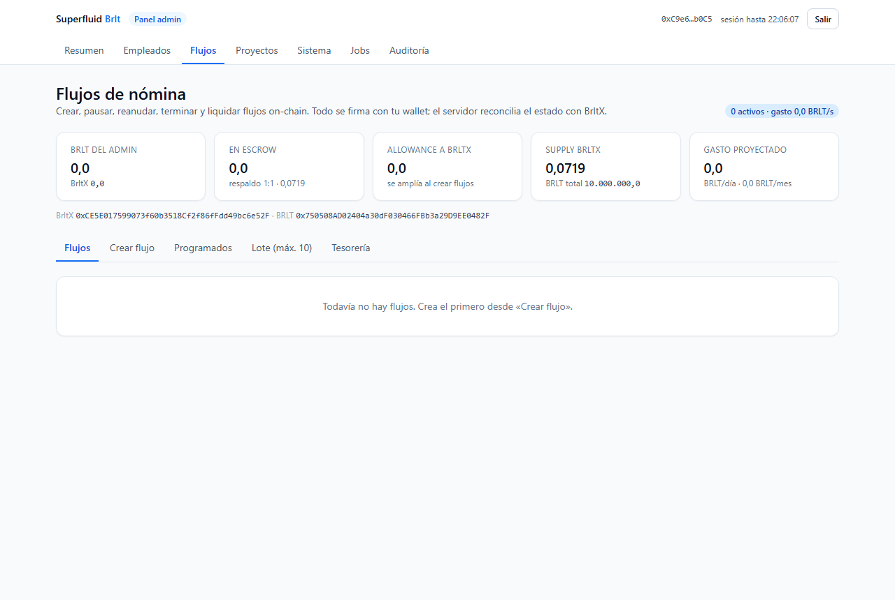
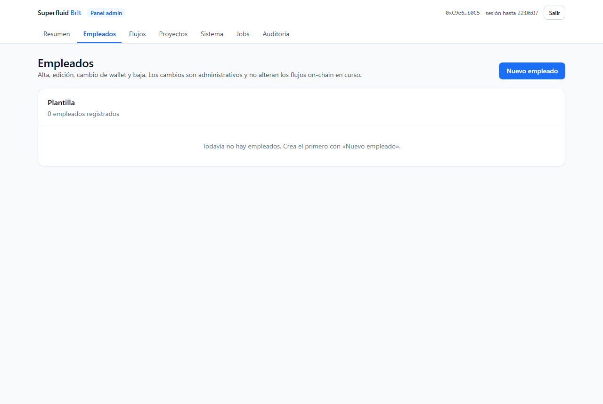
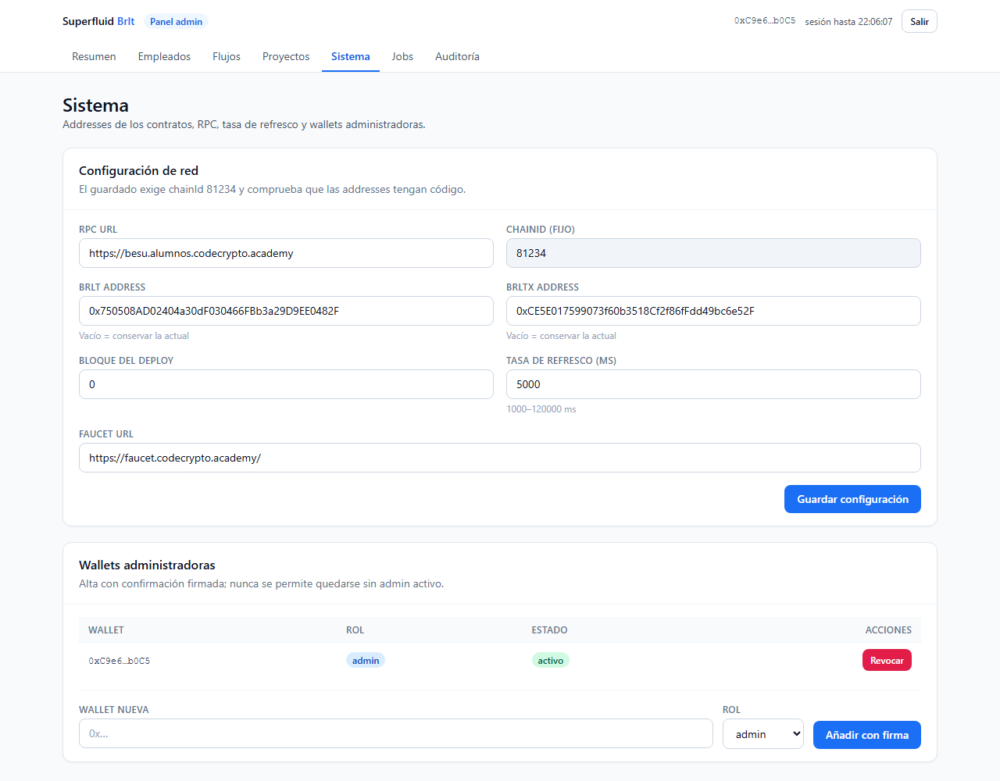
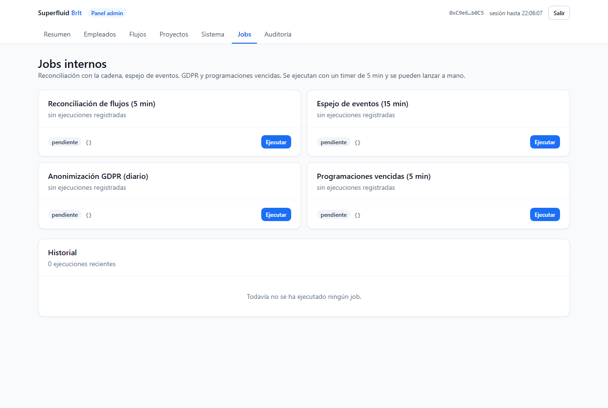
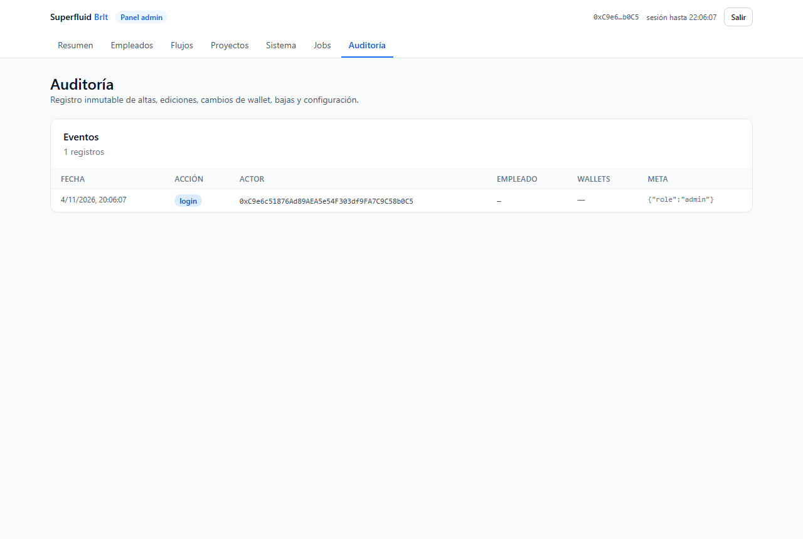

07-Manual-del-Admin/manual-admin.md
/entrar: la app consulta tu rol y te lleva
directamente al panel /admin (ya no necesitas adivinar la URL del panel).
(Vista general del panel: tarjetas de resumen y menú lateral con todas las secciones.)/entrar: conecta la wallet y la
app le decide el portal. Tú entras igual y acabas en /admin./entrar.
brltv2-00041-87c. No tienes que hacer nada:
los cuatro números del panel del empleado ya son fiables.El 2026-11-18 se ejecutó el guion operativo scripts/simular_actividades.py,
aprobado por el responsable:
RepoTecnico/BaseOperaciones/respaldo_20261118T173426Z/.Nomina ANLU,
empleados #2..#4).deleteFlow (9 terminaciones en auditoría con la
marca via: correccion-simulacion). El BRLT que ya habían acreditado sigue
en el BrltX de sus wallets.| Dato | Valor |
|---|---|
| Empleados activos | 5: Uno, Dos y Tres (100 BRLT/30 d) · Cuatro (mantenimiento, 50/15 d) · Cinco (proyecto_mvp, 80/6 d). |
| Proyectos | 2: Nomina ANLU y Mantenimiento Infraestructura. |
| Flujos vivos | #12 (300/30 d) y #13 (600/6 d) de nómina + #15 (360/6 d) de mantenimiento, activos; #14 terminado. |
| Programados | 2 en estado «próximo» (los ejecutas cuando toque). |
| Ejemplo auditado | Flujo #13: pausa acredita 0,125 BRLT → cobro del empleado Dos → reanudación, todo dentro del tope 80%. |
| Registro vivo | RepoTecnico/BaseOperaciones/estado_inyeccion.md (y respaldos en respaldo_*/). |

Ojo con los programados: hay 2 nóminas «próximas» esperando. Cuando llegue su día, revísalas en Flujos → Programados y decide: «Ejecutar» (firmas la creación) o «Cancelar».

(Lista de flujos: depositado, tasa, fin estimado, pendiente y estado reconciliados con el contrato. Las acciones cambian según el estado.)próximo); cuando llegue el día,
pulsa «Ejecutar» y firma (o Cancelar).
(Gestión de plantilla: alta, edición, baja y cambio de wallet con doble firma.)
(Pantalla de configuración: RPC, contratos y parámetros validados contra la red.)
(Panel de trabajos: estado de cada job, último resultado y botón «Ejecutar». )/suite, la app la devuelve a
/admin; y un empleado que intente entrar a /admin no tiene acceso.
(Historial de acciones: login, altas, cambios de wallet, operaciones de flujo, jobs y cobros de empleados verificados.)